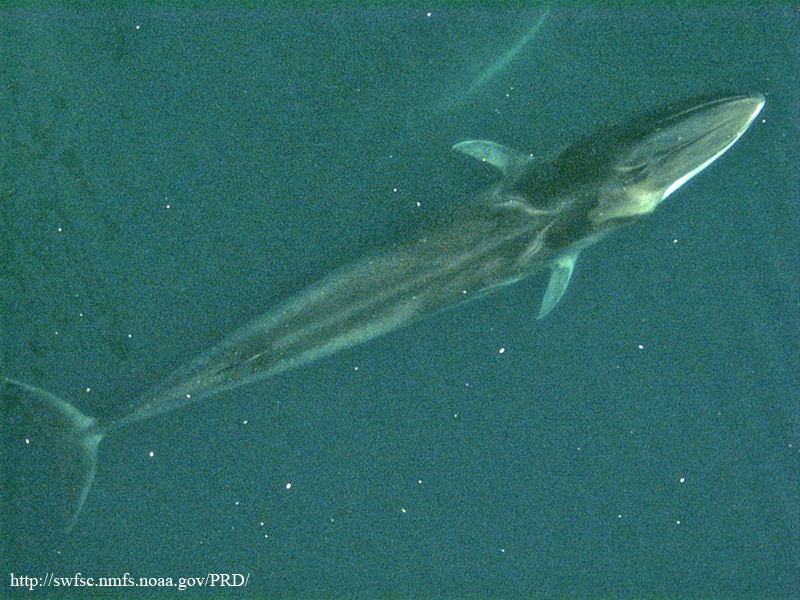
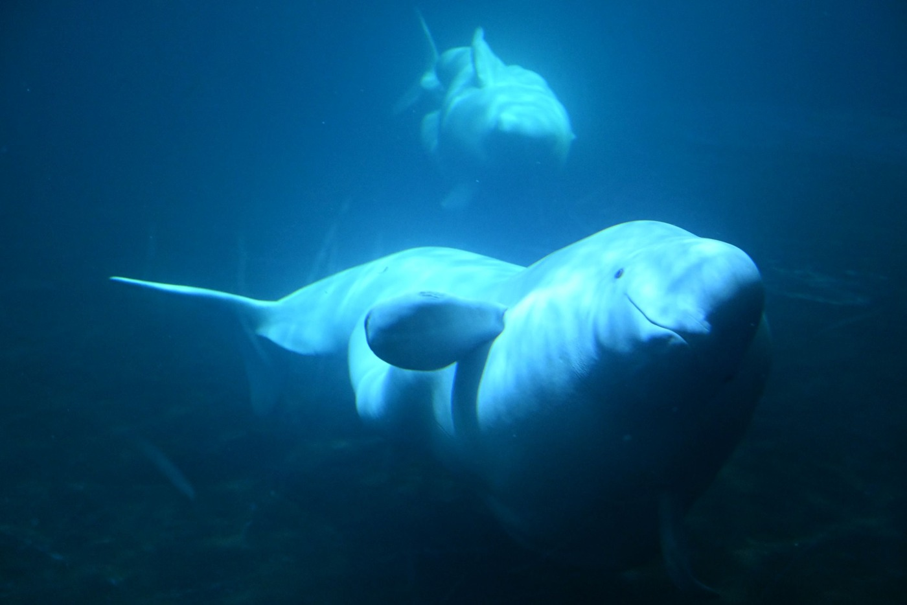
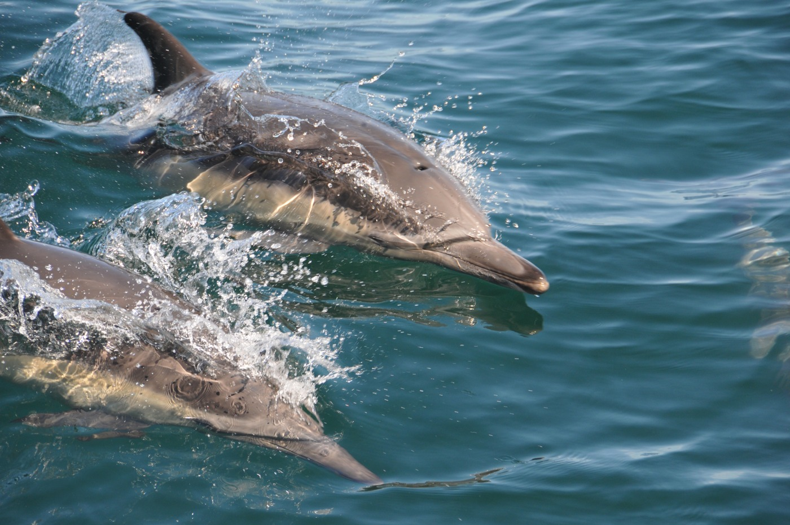

The earlier smooth bodies and painted mouth lines needed more work. This revision adds anatomical mouth openings and separate feeding sequences, revises selected head/body forms, fluke shapes and skin response, and removes the display platform for these aquatic studies.
These remain authored reconstructions. A complete finite display sequence is distinct from complete swimming or feeding mechanics: prey transport, suction pressure, water flow, contact, filtration, swallowing and physiology are unresolved. No photorealism, fitted specimen, accuracy percentage or independent biological validation is established.
113 final compiled views and 15 current-public before views are recorded. All are individually inspected. Software compatibility only; GPU optical appearance was not reviewed. The new compatibility shading samples optional normal/roughness maps, with approximate illumination and no water refraction or GPU shadows.
Skin maps are original reproducible fields, not fabricated organism photographs or measured reflectance maps. The narwhal retains its credited original delivered GLB; its displayed oral and pigment derivatives are disclosed. Other photos, accepted identities and occurrence holds are retained.
Fin whale · Balaenoptera physalus
Anatomical oral split, attached lips, paired baleen racks and longitudinal anterior pleats sculpted into one continuous body surface; selected anterior pouch expansion persists through closure. Thinner swept flukes now add foil pitch to posterior bending, with smaller pectoral stabilizing gestures. Original neutral charcoal skin, asymmetric jaw and reduced chevron contrast have separate relief/roughness fields.
Still unresolved. Rostral and jaw cross-sections, mandibular rotation, pouch volume/strain, baleen arrangement, posterior throat closure, fin roots, scar placement and tissue optics remain unmeasured. Oral exteriors overlap; histological unions, tongue inversion, water transport and filtration are unresolved. The outer body remains smooth and the expanded pouch contour/black oral lining are simplified; the shallow display folds do not fit an individual whale.
Scientific comparison. Actual author-hosted PDF; selected rorqual oral-floor/gular discussion and comparative methods read. Qualitative anterior gular expansion context; no fitted fin-whale pouch volume, tongue strain or water mechanics. Werth 2007 — comparative cetacean hyolingual anatomy
Aqqa Rosing-Asvid - Visit Greenland · CC BY 2.0 · source and grant. Actual whole photograph compared with expert species anatomy; source-caption or community identification is not independent redetermination. Water, perspective and lighting are not calibrated dimensions, optical constants or movement trajectories.

Protected Resources Division, NOAA SWFSC; individual unnamed · Public domain (US NOAA) · source and grant. Whole aerial exterior; retained source web-address mark. Water/perspective do not give calibrated body dimensions. Existing source/delivery hashes and grants: v653 licensing record.
Broader, more arched rostrum and heavier curved lip, differentiated low hump/knuckles and epibiont exteriors. A limited jaw/oral-floor and short-baleen study uses selected benthic orientation context rather than rorqual engulfment. Same scarred gray surface and swept flukes persist through the motions.
Still unresolved. Head/eye proportions, individual scars, barnacle identification/attachment, fin roots and optics remain authored. The 107.5-degree roll and -14-degree pitch illustrate one study mean; there is no seabed collision, sediment transport, suction pressure or recovered tag trajectory. Broad scar patches still read as numerical fields, and the low epibionts and short baleen do not reconstruct a specimen.
Scientific comparison. Official Europe PMC full XML, selected methods/results and complete Figures 1, 3, 5 actually inspected via its public supplementaryFiles archive. Thirty-nine tag deployments on 16 northern Puget Sound whales; 25 deployments recorded foraging. The study-specific mean orientation was 107.5-degree right roll and -14-degree pitch. These selected orientations are not a universal strategy or fitted skin/jaw controller. Private figures not redistributed. Clayton et al.2026 — gray-whale ghost-shrimp foraging kinematics
Chris Foster · CC BY 4.0 · source and grant. Actual whole photograph compared with expert species anatomy; source-caption or community identification is not independent redetermination. Water, perspective and lighting are not calibrated dimensions, optical constants or movement trajectories.
Fuller white-adult torso, rounded forehead/cheek and selected cervical folds; a narrower, laterally compressed caudal peduncle and broader curved pectoral foils replace the tapered cone/paddle appearance. Thickened lips form a selected anterior opening with reduced lateral gape and nine selected teeth per displayed row. Posterior strokes add fluke foil pitch.
Still unresolved. White adult selection only; head/cheek shape, lip seal, soft-tissue volume, tooth details, neck range and optical response remain unmeasured. Selected mouth/tongue-floor displacement does not calculate suction, prey transport or acoustics. The white skin is still optically too uniform and the cheek/melon/lip transition remains stylized relative to the live reference.
Scientific comparison. Actual official conference abstract read: seven belugas and seven Pacific white-sided dolphins, including beluga lip pursing and lateral gape occlusion. The Pacific white-sided measurements are not Delphinus data. TAMU thesis retrieval returned403; no new full 2009 journal figures or fitted motion samples claimed. Kane and Marshall — suction and ram feeding kinematics, SICB abstract
Lucy Keith-Diagne · CC BY 4.0 · source and grant. Lucy Keith-Diagne’s source is dated 16 June 2004 at Portland, Maine. The whole frame shows a white animal by a buoy; it is not evidence of the normal native range, a specified population, a typical posture, or a measured neck movement.

Ekki3 · CC BY 4.0 · source and grant. Source-captioned captive/sanctuary belugas, Iceland. Blue water and caustics are not intrinsic skin colour; no specimen fit or measured kinematics. Existing source/delivery hashes and grants: v653 licensing record.
Cosmic_dust retained delivered source is converted to contiguous runtime buffers and an external mouth derivative. Original continuous body-relative gray/white mottling replaces the abrupt painted head/flank field; the selected single left tusk is rigid throughout mouth movement. The short subterminal mouth has attached lips and a selected inner lining.
Still unresolved. The artist body and new pigment remain partly stylized; sex/age, scars, tusk root/helix, lips, palate and optics are unmeasured. Narwhal internal feeding anatomy is not established here. Tusk tapping/guidance and play are not implemented as capture or spearing. The mottling is an authored adult-like selection and remains coarse in the software view; the small dark mouth lining is simplified.
Scientific comparison. Actual publisher PDF, selected methods/results and complete Figures 2A–H and 3A–F inspected. Three narwhals in two Canadian High Arctic observations; pursuit, taps/guidance, play and capture differ. No supplementary source video inspected in this turn or fitted suction/pressure controller. The archive tusk does not deform, bite or spear fish. O’Corry-Crowe et al.2025 — narwhal tusk use during foraging, exploration and play
Dr. Kristin Laidre, Polar Science Center, UW / NOAA OAR OER · Public domain (US NOAA) · source and grant. Source-caption or community species association, compared with specialist anatomy; not independent redetermination or a photograph of this selected model. Visible body regions, preservation, lighting and source limits are recorded in the review.
Less blue, more neutral charcoal/cream/gray regional skin; finer lip outline, separate inner palate/floor and selected conical tooth rows. The slender-beaked jaw-capture exterior sequence differs from beluga lip pursing. Swept flukes add selected foil pitch, with smaller pectoral gestures.
Still unresolved. The broad SMM Delphinus delphis concept is retained; the California live reference may represent a long-beaked eastern Pacific form. Beak, eye, tooth counts, hourglass boundaries and optics are selected, without subspecies determination. No prey or water solver. The abrupt dorsal/cream boundary, shoulder volume, regular tooth display and flat-looking fin roots still need specimen-based refinement.
Scientific comparison. Actual author-hosted full PDF, selected methods/odontocete anatomy and complete printed p. 557 Figure 6 inspected: a parasagittal Delphinus delphis section shows its long jaws, tongue and sublingual space. This preserved anatomical evidence is not a measured live jaw trajectory. Private section not redistributed. Werth 2007 — comparative cetacean hyolingual anatomy, Delphinus head section
Cricket Raspet · CC BY 4.0 · source and grant. The actual California whole group frame may represent an eastern Pacific long-beaked form. The accession follows the broad SMM April 2026 Delphinus delphis concept; it is not a short-beaked subspecies determination. Separate-species bairdii treatments are disclosed without another counted accession.

Karen Grimmer / NOAA National Marine Sanctuaries · Public domain · source and grant. Whole Monterey Bay photograph under the disclosed broad species concept; possible long-beaked eastern Pacific form. No independent subspecies determination. Existing source/delivery hashes and grants: v653 licensing record.
Goldbogen 2006 Figure 9 is a time-series plot of four lateral lunges; jaw opening is inferred at estimated maximum speed. It is not a set of direct jaw-video frames. The selected fin study includes an authored approach stroke, opening/closure, lateral orientation and pouch recovery; its 87-degree roll context does not fit a particular animal.
Primary source figures and supplementary video rights have separate scopes. Private paper pages are not included here. The TAMU feeding thesis returned 403 and was not retrieved or bypassed. No sign-in model payload, purchases, paid generation or credentials were used. Earlier source-scope and taxonomic caveats remain linked in each profile and the preceding review.
Schedules remain off. This release adds zero species: 337 actual public records remain the target count for verification. Broader realism and movement requests are unfinished.